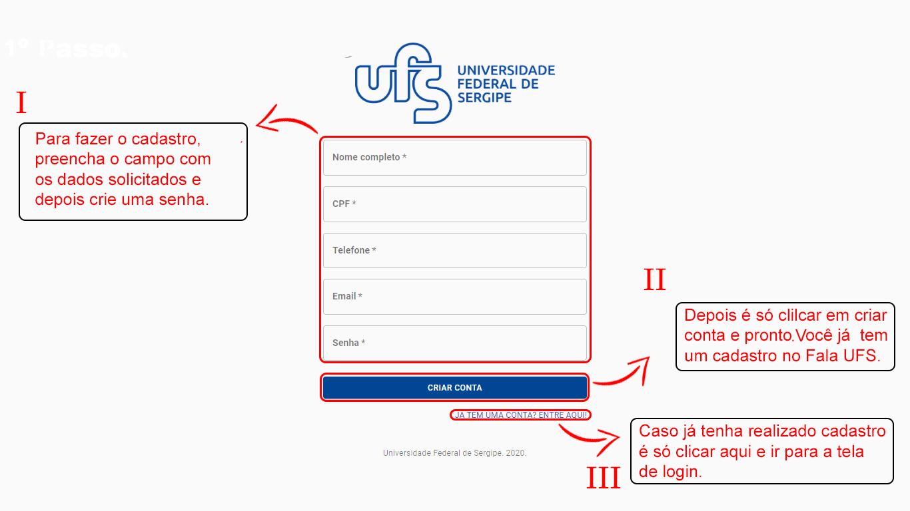
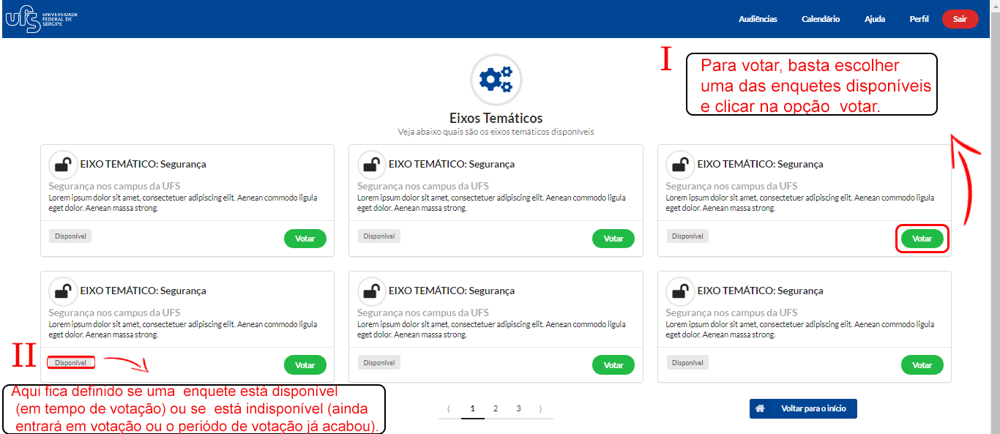

Para ajudar você, criamos um guia caso tenha alguma dúvida.
Baixar tutorial em PdfPara conseguir ter acesso ao Fala UFS, primeiro é necessário fazer um cadastramento bem simples.Para efetuar o cadastro é só informar os seguintes dados.
Veja mais na ilustração abaixo:
Agora que você já tem sua conta na plataforma é necessário fazer o login. Para isso basta digitar o e-mail e senha informados no cadastro.
Veja mais na ilustração abaixo:

Após conseguir entrar na plataforma está na hora de ter participação nas decisões da UFS. Para isso você deve escolher uma enquete entre as disponíveis e selecionar a opção votar.
Observação:cada enquete tem um exito temático que define o tema da enquete.Isso pode facilitar a sua visualização na hora de analisar as enquetes.
Veja mais na ilustração abaixo:
Agora que você já escolheu em qual enquete votar podemos finalizar o voto.Para isso você precisa escolher o índice de satisfação que mais condiz com sua opnião.Depois você tem a opção de enviar um comentário expondo sua crítica sobre o assunto publicamente.Existe também a opção de votar sem enviar comentário.
Veja mais na ilustração abaixo:

Depois de ter finalizado seu voto você pode ver comentários de outros usuários. Nesta opção também está disponível um filtro para que você possa visualizar votos de acordo com o índice de satisfação escolhido.Assim fica mais fácil ver opiniões de pessoas que escolheram o voto igual ou adverso ao seu, tornando a plataforma ainda mais democrática.
Veja mais na ilustração abaixo: